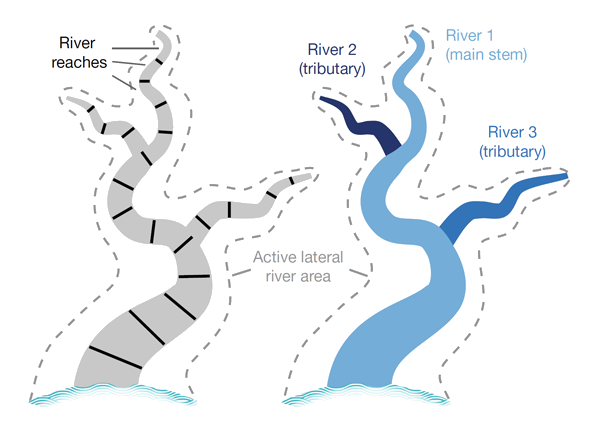

1.1 Background
This repository contains source code related to the study: Mapping the world’s free-flowing rivers. The scripts and modules described here form part of a “free-flowing rivers analysis: or “FRA”
Free-flowing rivers assessment (FRA). A FRA is an assessment to determine the connectivity status of rivers by taking into consideration both natural connectivity as well as fragmentation from infrastructure, such as dams, roads, urban areas, water use.
Connectivity Status Index (CSI). The methodology uses global datasets of hydrography and pressure indicators to create an integrated connectivity status index (CSI).
Connectivity dimensions. Four dimensions are considered to determine the CSI of river reaches: (1) longitudinal (connectivity between up- and downstream), (2) lateral (connectivity to floodplain and riparian areas), (3) vertical (connectivity to groundwater and atmosphere) and (4) temporal (connectivity based on seasonality of flows).
Hydrographic framework. River reaches are the smallest element in the river network and unit for the calculation of the CSI. Rivers are linear feature that consists of multiple river reaches. Tributaries form new rivers. Free-flowing status is determined at the scale of the entire river.
FFR status. Free-flowing river status is determined on the basis of CSI. Only rivers with high levels of connectivity (CSI ≥ 95%) throughout their entire length are considered FFRs.
Pressure indicators. The assessment relies on 6 pressure indicators:
- Degree of Fragmentation (DOF)
- Degree of Regulation (DOR)
- Sediment Trapping Index (SED)
- Water consumption (USE)
- Road construction (RDD)
- Urban development (URB)
Connectivity Status Index (CSI). The CSI is the weighted average of the six pressure indicators described above. The CSI is calculated at the river reach scale and is used to determine the free-flowing river status.
Dominant Pressure Factor (DOM).. This index indicated which of the six pressure indicators contributed most to the weighted CSI value.
Free-flowing river status (STA).. The status of a river can be classified as either “free-flowing”, “good connectivity status” (partial river), or “impacted”.
1.2 Objectives and outcomes of this repository
The source code described here aims to
- calculate or update pressure indicators (such as DOF, DOR, SED) that form the basis for calculating the connectivity status index (CSI);
- calculate the connectivity status index (CSI) using multiple weighting scenarios, and conduct benchmarking and sensitivity analysis
- calculate the Dominant Pressure Factor (DOM), given the cumulative pressures from the six pressure factors
- classify rivers according to their free-flowing status (STA)
- produce statistics and geodata results